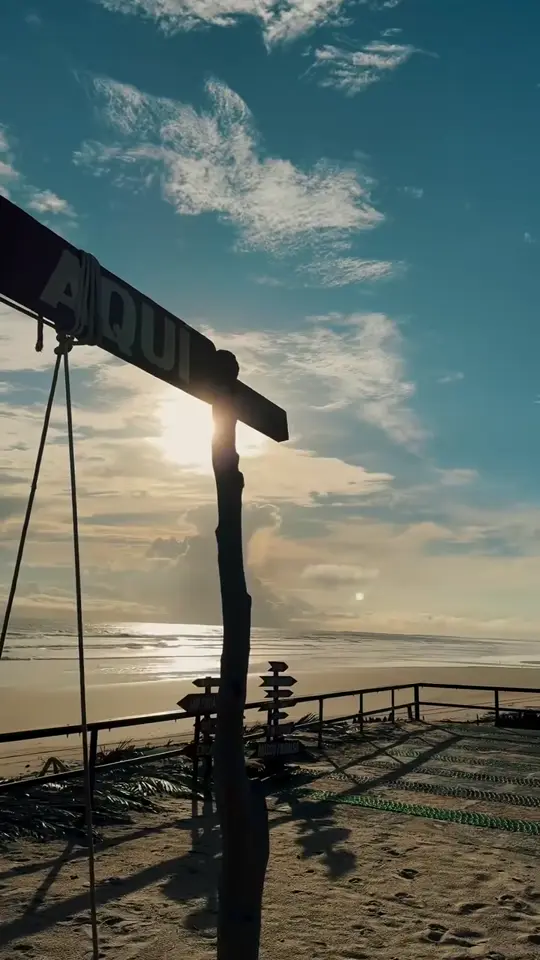
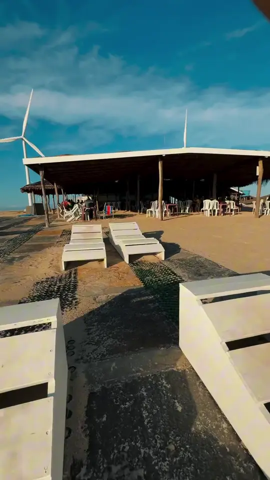
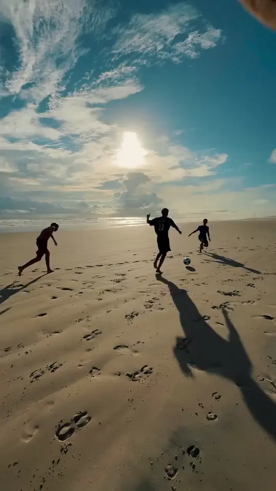
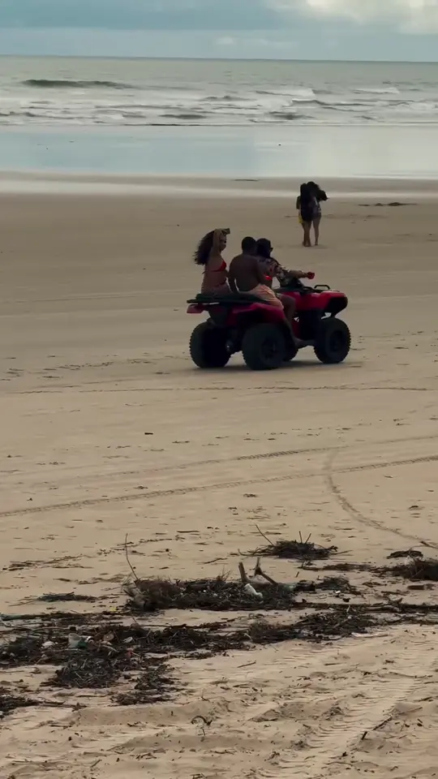
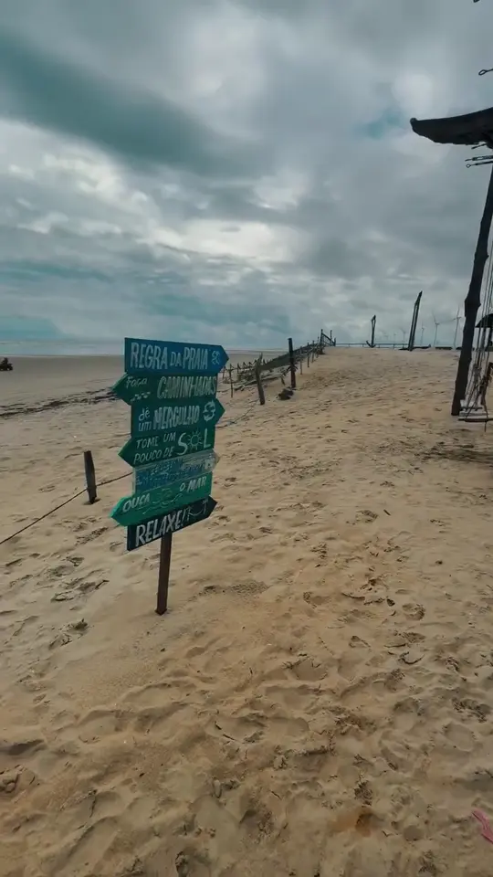
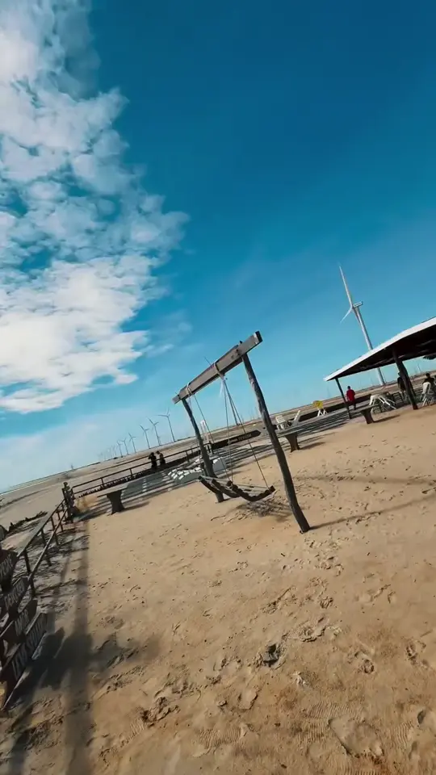
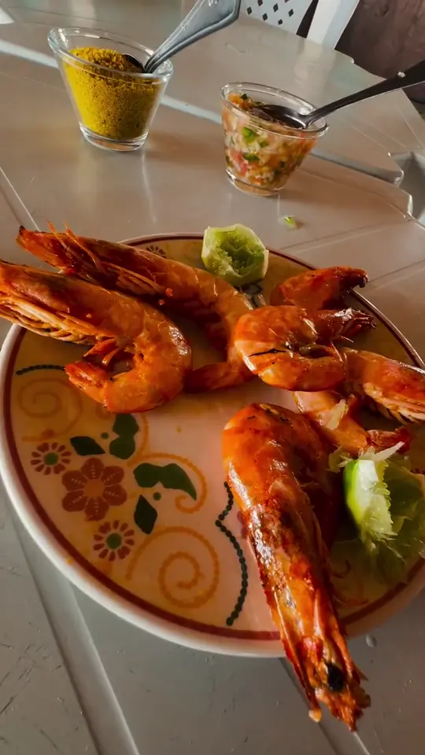
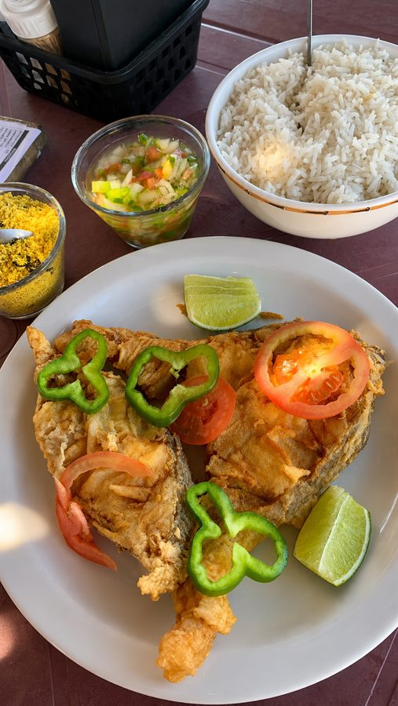
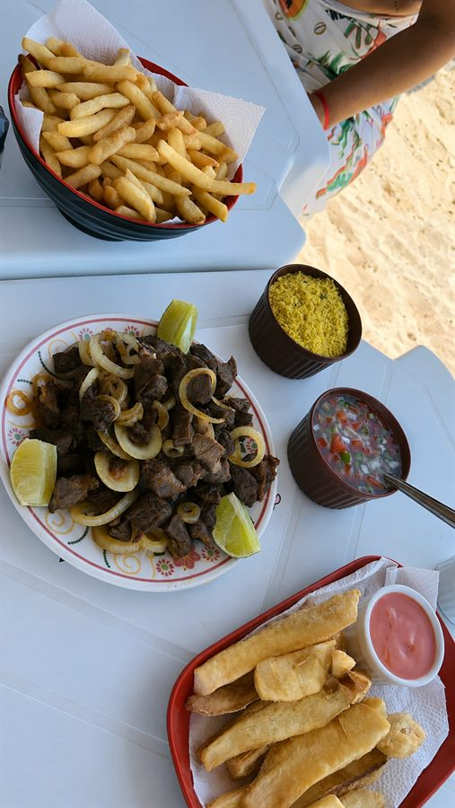
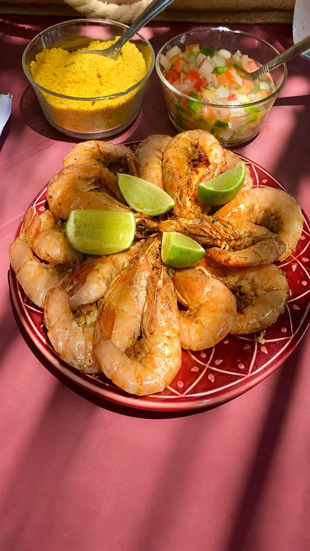

O sabor do mar direto para sua mesa.
Barraca do Ivan · Praia do Barro Vermelho · Paulino Neves — MA
Quem Somos
Localizada na bela Praia do Barro Vermelho, em Paulino Neves – MA, a Barraca do Ivan é o ponto de encontro perfeito para quem busca comida boa e o verdadeiro sabor da culinária maranhense.
Frutos do mar fresquíssimos, petiscos caprichados e refeições fartas para toda a família. Aqui você encontra qualidade, carinho e o calor genuíno do Nordeste.
Somos uma barraca tradicional da Praia do Barro Vermelho, com atendimento carinhoso e pratos que fazem você voltar sempre. Venha nos visitar e sentir o verdadeiro gosto do litoral maranhense!
Localizada próximo a Barreirinhas, Tutóia, aos Lençóis Maranhenses e aos Pequenos Lençóis Maranhenses, a Praia do Barro Vermelho é uma parada obrigatória para quem faz roteiro turístico pelo litoral do Maranhão.







Gastronomia
Frutos do mar fresquíssimos, petiscos caprichados e refeições fartas para toda a família. Nosso cardápio tem camarão, peixe frito, lagosta, mariscos e carne de sol, além de petiscos variados, bebidas geladas e pratos completos da culinária maranhense.
Tudo feito com ingredientes frescos do litoral, servido com o pé na areia e a brisa do mar, a experiência gastronômica mais autêntica do Maranhão.





A Praia
A Praia do Barro Vermelho é uma das praias mais deslumbrantes do Maranhão. Localizada no município de Paulino Neves, essa praia paradisíaca encanta turistas com suas areias brancas e finas, dunas imponentes, águas calmas e uma natureza praticamente intocada, o verdadeiro litoral selvagem do Nordeste brasileiro.
Areias brancas, dunas douradas e vegetação nativa de restinga: um dos últimos trechos de praia deserto e preservado do litoral maranhense. Paulino Neves fica próximo a Barreirinhas, a porta de entrada dos Lençóis Maranhenses.
Turistas que visitam os Lençóis Maranhenses frequentemente incluem a Praia do Barro Vermelho no roteiro, que também é rota para quem viaja entre Barreirinhas e Tutóia pelo litoral maranhense.
Conheça a praia
Excursões
Planejando uma excursão para a Praia do Barro Vermelho? A Barraca do Ivan oferece atendimento especial para grupos com cardápio customizado, estrutura para grandes quantidades e toda a hospitalidade maranhense! Fale com a gente: (11) 96917-0096.
Onde Comer
A Barraca do Ivan é o principal restaurante de Paulino Neves e uma parada obrigatória para quem visita os Pequenos Lençóis Maranhenses. A apenas 40 km de Barreirinhas e a caminho de Tutóia, somos o melhor ponto de parada gastronômica do roteiro litorâneo norte do Maranhão. Veja o guia de onde comer.

Traga sua excursão pra Barraca do Ivan!
Fale com a gente!Como Chegar
A Praia do Barro Vermelho fica no município de Paulino Neves – MA. Confira as rotas de acesso mais comuns para turistas:
Partindo de Barreirinhas
Siga pela MA-315 em direção a Paulino Neves (cerca de 40 km). A estrada passa por dunas e restingas do litoral maranhense. Ao chegar em Paulino Neves, siga em direção à praia. A Barraca do Ivan fica diretamente na orla da Praia do Barro Vermelho.
Partindo de Tutóia
De Tutóia, siga pela MA-315 em direção a Paulino Neves (cerca de 33 km). Tutóia também é porta de entrada pelo Delta do Parnaíba, e o roteiro Tutóia → Paulino Neves → Barreirinhas é um dos mais bonitos do Nordeste.
Partindo de São Luís
De São Luís, siga pela BR-135 até Bacabeira e depois pela BR-402 até Barreirinhas (cerca de 255 km). De lá, siga pela MA-315 até Paulino Neves (cerca de 40 km). São cerca de 290 km no total. Também há vans e transfer turístico saindo de São Luís e de Barreirinhas.
Dica de roteiro
O roteiro mais completo do litoral norte do Maranhão inclui: São Luís → Barreirinhas → Lençóis Maranhenses → Paulino Neves (Praia do Barro Vermelho) → Tutóia → Delta do Parnaíba. Almoçar na Barraca do Ivan é uma das melhores paradas do trajeto. Confira nosso guia de onde comer em Barreirinhas e o guia completo de como chegar.
Perguntas Frequentes
Onde fica a Barraca do Ivan?
A Barraca do Ivan fica na Praia do Barro Vermelho, em Paulino Neves – Maranhão. É um restaurante à beira-mar, próximo a Barreirinhas, Tutóia e aos Lençóis Maranhenses. Acesse pelo Google Maps.
A Praia do Barro Vermelho fica perto de Barreirinhas?
Sim! A Praia do Barro Vermelho fica próxima a Barreirinhas e é um destino muito procurado por turistas que visitam os Lençóis Maranhenses. É a parada perfeita para almoçar com frutos do mar frescos durante o seu roteiro turístico pelo Maranhão.
A Barraca do Ivan atende excursões e grupos?
Sim! Oferecemos atendimento especial para grupos e excursões com cardápio personalizado e estrutura para grandes quantidades. Entre em contato pelo WhatsApp (11) 96917-0096 para reservas de excursão.
O que tem no cardápio da Barraca do Ivan?
Nosso cardápio inclui frutos do mar frescos: camarão, peixe frito, lagosta, mariscos e carne de sol, além de petiscos variados, bebidas geladas e pratos completos da culinária maranhense. Tudo feito com ingredientes frescos do litoral!
Qual o horário de funcionamento?
Funcionamos todos os dias, das 9h às 18h. Para pedidos agendados e excursões, entre em contato com antecedência pelo WhatsApp (98) 98812-6176.
O que fazer na Praia do Barro Vermelho?
Na Praia do Barro Vermelho em Paulino Neves você pode: banhar-se nas águas calmas, passear pelas dunas, fazer trilhas na restinga, comer frutos do mar frescos na Barraca do Ivan, fotografar a paisagem e fazer passeios de buggy pelas dunas. É uma das praias mais bonitas e preservadas do Maranhão!
A Praia do Barro Vermelho fica próxima a Tutóia?
Sim! Paulino Neves fica na rota entre Tutóia e Barreirinhas, no litoral norte do Maranhão. Quem faz o roteiro do Delta do Parnaíba em Tutóia costuma passar por Paulino Neves e pela Praia do Barro Vermelho a caminho dos Lençóis Maranhenses em Barreirinhas.
Vale a pena visitar Paulino Neves no Maranhão?
Com certeza! Paulino Neves é uma cidade encantadora do Maranhão com a deslumbrante Praia do Barro Vermelho. Próxima a Barreirinhas e aos Lençóis Maranhenses, é um destino ideal para quem busca praia selvagem, natureza preservada e frutos do mar frescos com o verdadeiro sabor nordestino.
Como chegar à Praia do Barro Vermelho partindo de Barreirinhas?
Saindo de Barreirinhas, siga pela MA-315 em direção a Paulino Neves (cerca de 40 km). Ao chegar no município, siga em direção à orla da Praia do Barro Vermelho. A Barraca do Ivan fica diretamente na praia, fácil de encontrar. Use o Google Maps com o link disponível neste site para orientação precisa.
Tem restaurante perto de Barreirinhas?
Sim! A Barraca do Ivan fica a apenas 40km de Barreirinhas, na Praia do Barro Vermelho em Paulino Neves – MA. É uma parada obrigatória no roteiro de quem sai de Barreirinhas rumo a Tutóia ou ao Delta do Parnaíba.
Tem restaurante nos Pequenos Lençóis Maranhenses?
A Barraca do Ivan fica na Praia do Barro Vermelho, em Paulino Neves – região dos Pequenos Lençóis Maranhenses. Servimos frutos do mar frescos, camarão, peixe frito e petiscos para turistas que fazem o roteiro pelos Pequenos Lençóis e Lençóis Maranhenses.
Tem restaurante próximo a Tutóia?
Sim! A Barraca do Ivan fica em Paulino Neves, que está na rota entre Tutóia e Barreirinhas. É uma parada perfeita para quem viaja do Delta do Parnaíba (Tutóia) em direção aos Lençóis Maranhenses (Barreirinhas).
O que fazer em Paulino Neves MA?
Em Paulino Neves você pode visitar a Praia do Barro Vermelho, passear pelos Pequenos Lençóis Maranhenses, fazer trilhas nas dunas, praticar esportes náuticos e comer frutos do mar frescos na Barraca do Ivan. É um destino tranquilo e paradisíaco no litoral maranhense.
Qual o melhor restaurante na praia no Maranhão?
A Barraca do Ivan é um dos melhores restaurantes na praia do Maranhão, localizado diretamente na Praia do Barro Vermelho em Paulino Neves – MA. Com frutos do mar frescos, vista para o mar e ambiente familiar, é referência gastronômica no litoral norte do Maranhão.
Tem restaurante na Praia do Barro Vermelho em Paulino Neves?
Sim! A Barraca do Ivan é o restaurante referência na Praia do Barro Vermelho em Paulino Neves – MA. Funciona todos os dias das 9h às 18h com frutos do mar frescos, camarão, peixe frito, carne de sol e bebidas geladas. Atendemos também grupos e excursões com reserva prévia.